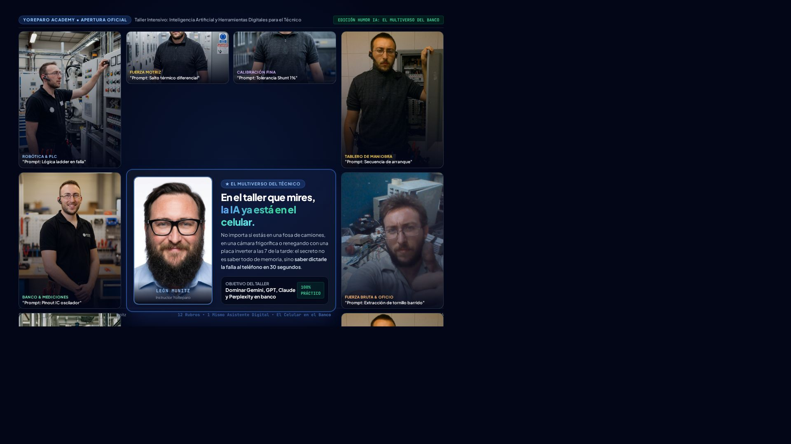

Mismo temario técnico obligatorio, narrado y maquetado con 5 personalidades y distribuciones espaciales únicas.

11 viñetas satélites con fotos reales de León operando en distintos oficios (robótica, banco, cañerías, tableros, calibración fina, gabinetes, automatización, fuerza bruta) y una foto central prominente de frente con la premisa: "En el taller que mires, la IA ya está en el celular".
Tono visceral y de taller real. Lenguaje de igual a igual con mate, pinza, estaño y humor de banco ("el típico clavo de las 6 PM"). Tarjetas asimétricas estilo libreta de mostrador.
Rigor de ingeniería inversa y quirófano de precisión. Badges metrológicos (V, A, Ω, °C, ms), fuentes mono para datos, y enfoque del circuito como un paciente en terapia intensiva.
Unix hardware hacker. Ventanas de terminal Linux con controles de ventana RGB, JetBrains Mono, Input/Process/Output, y prompts presentados como scripts ejecutables (.sh y .py).
Diseño para proyección en pantalla gigante (Zoom / YouTube Live). Preguntas de impacto en tipografía colosal, enfrentamiento "La Trampa" vs "La Jugada Maestra", y disparadores activos para el chat.
Enfoque en tiempo, costos y dinero. Métricas de ROI (+45 min ahorrados por placa = +2 reparaciones/día), costo real de repuesto ($4 USD) vs cobro de mano de obra ($65 USD) y blindaje de garantías.